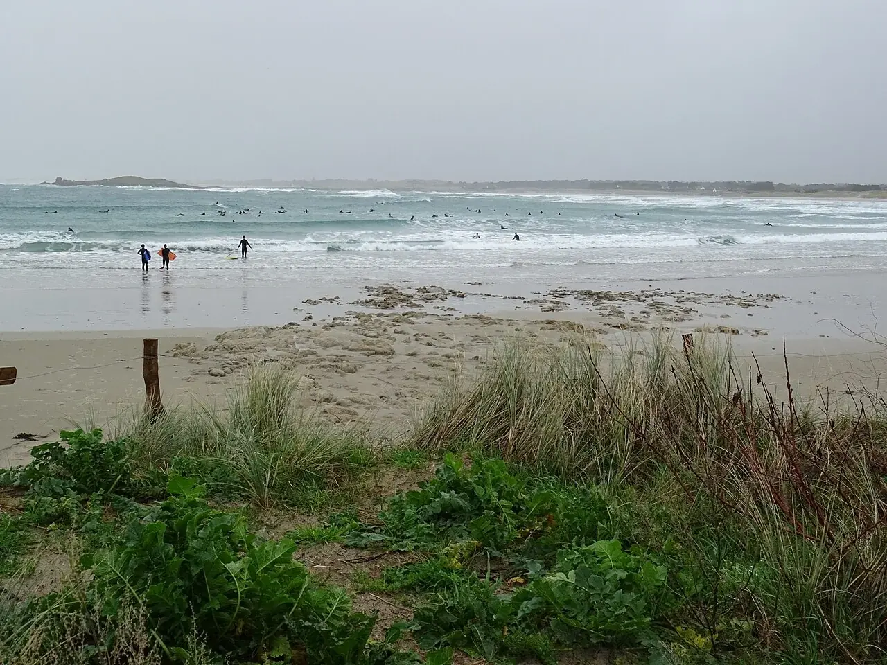

Pors Carn
Finistère, France · surf

La baie de Pors Carn, près de Penmarc’h, fait face à la pointe de La Torche. Une autre escale sur la côte bigoudène.
- Lieu
- Finistère, France
- Niveau
- Variable selon les conditions
- Activités
- surf
- Type d'eau
- Mer / océan
- Coordonnées
- 47.83, -4.37 (position approximative du secteur)
Ouvrir dans Ocean Buddy Télécharger sur l'App Store
Source : Destination Pays bigouden.